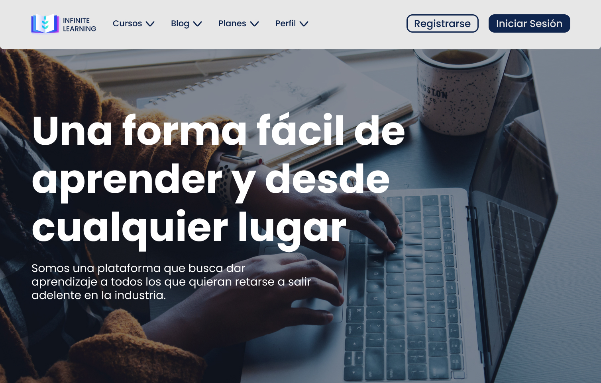
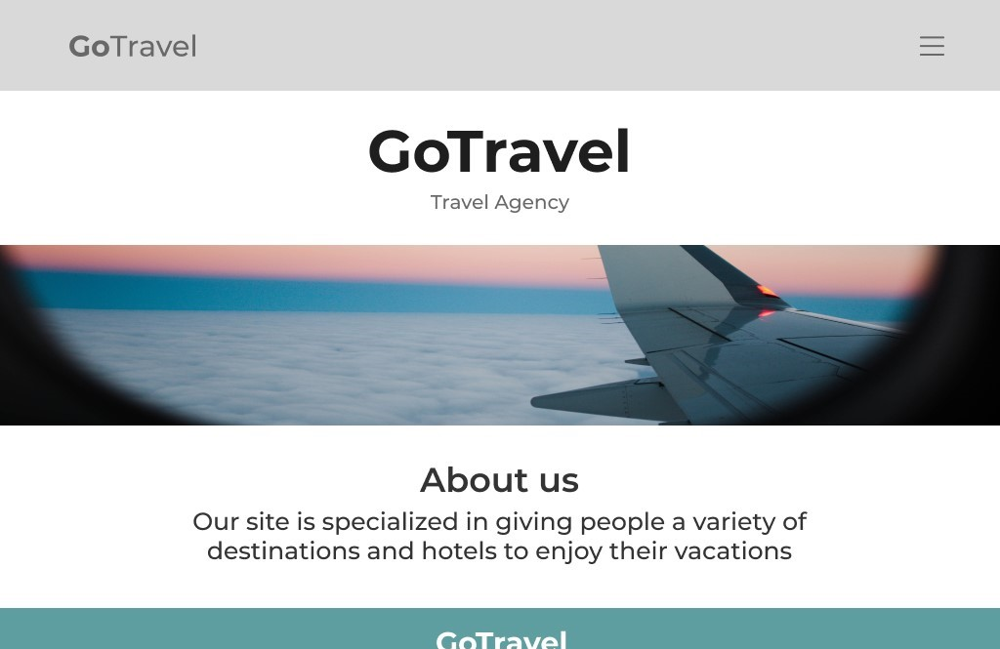

About Me
I am a web design and development student. I consider myself a responsible and organized person, and throughout my career I have managed to develop creativity, teamwork and leadership. I really like what design is, also photography, drawing and learning new languages.
Recent Projects

Infinite Learning Project
This was a project that I made with some of my webmates about an educational platform. It was created with HTML and CSS (Sass).
See project

Go Travel Project
This was a project that I did with my webmates and it is about a site that offers tourist places with a list of hotels. It was created with HTML and CSS (Sass).
See project